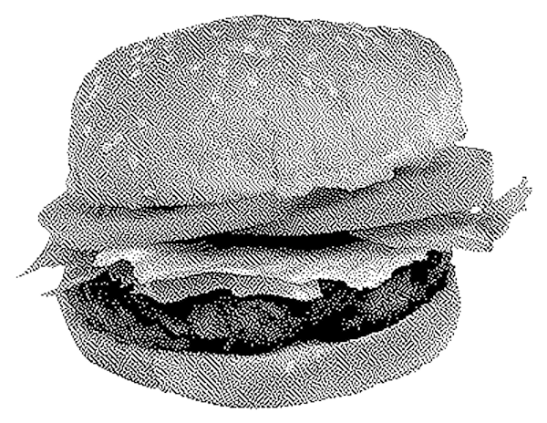
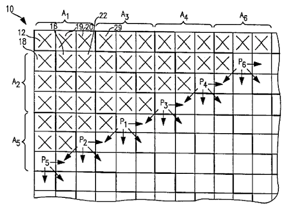
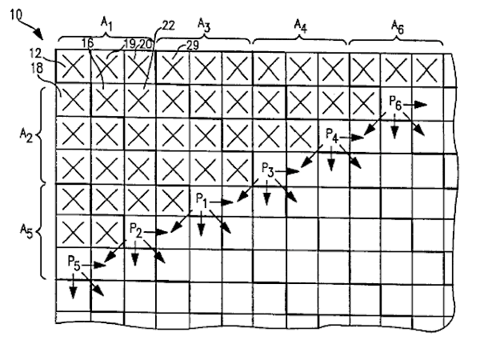

DITHEROSCOOP
This is a dither and zoom machine. Upload an image and go through their 1-bit translation. Your new hobby will be observing error diffusion patterns. This organised pixel chaos is formed by Bill Atkinsons dither algorithm.
What is dithering?
Computers used to have 1-bit displays. In reference to images ‘bits’ refer to the number of tonal variation of a color. This means there were only two color options for a pixel. Grey-scaled images couldn’t be displayed.

Dither algorithms are a solution for this problem. This code create an illusion of grey-scales.

There arevarious types of dithering. Some create ordered patterns, others create disordered patterns. I’m the most interested in the second type because it acts more unpredictable.

It is called error diffusion dithering. This algorithms look at each pixel of the image in sequence. Pixels more than 50% black become black and pixels with more than 50% white become white.
 

The interesting part is the error in this code, which makes the patterns unpredictable. The error distributes the difference of the final (1-bit) pixel’s value and the original value to the neighbour pixels. What the algorithm does at one location influences what happens at other locations.
I used explanation from these sites, because they are knowers and they explained it very well and do it better than I can. so thank you: https://medium.com/@ethanmiller/dithering-and-animation-with-third-ear-eb21395ca355 https://www.evilmadscientist.com/2012/dithering/ https://www.leadtools.com/blog/imaging/introduction-dithering/ http://verlagmartinkoch.at/software/dither/index.html
How does this tool work?
Upload one or more images. They will appear on the fabric-canvas canvas.
Drag, rotate, skew, scalee your image by dragging the blue hendles. Remove with backspace. Copy with c. Paste with p.
Click (don't drag) on the gradient shapes and move them over your images.
Zoom in with your mouse on the dither-canvas and explore the 1-bit translation of your image. And double click on the dither-canvas to start over.
You are adjusting values in the Atkinsons dither algorithm when you slide these sliders.
save your image as a PNG.
copyright Cato Speltincx